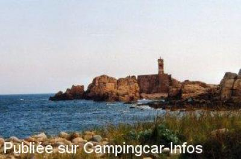

APCC = parkings réservés camping-cars sans services de :
PLOUBAZLANEC L'Arcouest
(N° 329)
Accès/adresse :
Route de l'Embarcadère
Pointe de L'Arcouest
22620 PLOUBAZLANEC
Pointe de L'Arcouest
22620 PLOUBAZLANEC
Latitude : (Nord) 48.81997° Décimaux ou 48° 49′ 11′′
Longitude : (Ouest) -3.02007° Décimaux ou -3° 1′ 12′′
Tarif : 2013
Stationnement juin à septembre : 6 €
Services :

Embarcadère pour île de Bréhat
Marché le dimanche matin
Autres informations :
Ouvert toute l'année
20 emplacements en pente, ombragés sur herbe
Les P1 P2 P3 ne sont pas accessibles aux C-C, barrières de hauteur

Le 24/08/2010 par POLO
Le 18/06/2009 par Xtian74
Le 13/04/2004 par claude.gac

Le 10/03/2003 par B.MOQUETTE
Le 10/03/2003 par B.MOQUETTE
de
rouglan
le 12/05/2015 :
nous y avons passées 1 nuit en avril 2015 ,parking gratuit un peu en pente mais parfait pour prendre le bateau pour l'ile de bréhat ( magnifique)
nous y avons passées 1 nuit en avril 2015 ,parking gratuit un peu en pente mais parfait pour prendre le bateau pour l'ile de bréhat ( magnifique)
de
SYBRUB
le 09/09/2014 :
nous y avons passé 2 jours mi aout 2014. Il s'agit d'un parking en réalité, quasiment en pente partout, y compris pour les stationnement le long de la chaussée. Nuit paisible au calme. Le seul attrait est que cela permet de faire de belles balades dans le coin car rien à proximité niveau commerces mis à part près de l'embarcadère
nous y avons passé 2 jours mi aout 2014. Il s'agit d'un parking en réalité, quasiment en pente partout, y compris pour les stationnement le long de la chaussée. Nuit paisible au calme. Le seul attrait est que cela permet de faire de belles balades dans le coin car rien à proximité niveau commerces mis à part près de l'embarcadère
de
Pascal BELANT
le 15/05/2014 :
Mis à part la vue et la proximité de l'embarcadère, le seul intérêt de ce parking est de permettre de visiter l'ile de Bréhat. Déjà quasi plein le 06 mai, qu'est ce que cela doit être en saison ... Pour passer la nuit (2 pour être tranquille toute la journée sur l'ile)préférer le camping du Raou
Mis à part la vue et la proximité de l'embarcadère, le seul intérêt de ce parking est de permettre de visiter l'ile de Bréhat. Déjà quasi plein le 06 mai, qu'est ce que cela doit être en saison ... Pour passer la nuit (2 pour être tranquille toute la journée sur l'ile)préférer le camping du Raou
de
BIGAND alain
le 14/09/2013 :
aire nulle, en pente et boueuse les jours de pluie; l'ile de Bréhat mérite beaucoup mieux ainsi que les camping-caristes que nous sommes; pour ma part j'ai opté pour le camping du rohou, tout proche, et je n'ai eu qu'à m'en féliciter car ce camping avec vue sur mer est très agréable et le propriétaire très sympa
aire nulle, en pente et boueuse les jours de pluie; l'ile de Bréhat mérite beaucoup mieux ainsi que les camping-caristes que nous sommes; pour ma part j'ai opté pour le camping du rohou, tout proche, et je n'ai eu qu'à m'en féliciter car ce camping avec vue sur mer est très agréable et le propriétaire très sympa
de
cricri
le 07/08/2013 :
endroit superbe dommage que l on ne pense qua l argent car pour les cc rien n ai fait il faut payer 6€ pour etre dans l herbe sur un terrain en pente avec peu de place et beaucoup de boue avec ce qu on leur laisse il pourai mettre du gravier et niveler le terrain
endroit superbe dommage que l on ne pense qua l argent car pour les cc rien n ai fait il faut payer 6€ pour etre dans l herbe sur un terrain en pente avec peu de place et beaucoup de boue avec ce qu on leur laisse il pourai mettre du gravier et niveler le terrain
de
alainf
le 03/12/2011 :
De passage le 1 Décembre, je confirme qu'il n'est plus possible quand on est en camping-car de se rendre sur l'île de Bréhat. Le bout de terrain qui nous est réservé est occupé par des poids-lourds "aménagés" et des fourgons. Le parking payant est fermé. Sur l'ensemble des 3 parkings gratuits munis de barres de hauteur, il n'y avait qu'une seule voiture !
Carton rouge à la municipalité de Ploubazlanec dont dépend ce site
De passage le 1 Décembre, je confirme qu'il n'est plus possible quand on est en camping-car de se rendre sur l'île de Bréhat. Le bout de terrain qui nous est réservé est occupé par des poids-lourds "aménagés" et des fourgons. Le parking payant est fermé. Sur l'ensemble des 3 parkings gratuits munis de barres de hauteur, il n'y avait qu'une seule voiture !
Carton rouge à la municipalité de Ploubazlanec dont dépend ce site
de
coco038
le 19/06/2010 :
De passage au mois de juin, tous les parkings sont équipés de barre. Il reste, le long de la sortie, un terrain en herbe et incliné. Cales obligatoires et un autre plan au dessus du chemin mais très vite plein et pentu. Pas de service. Mais, le matin... vue sur l'île de Bréhat.
De passage au mois de juin, tous les parkings sont équipés de barre. Il reste, le long de la sortie, un terrain en herbe et incliné. Cales obligatoires et un autre plan au dessus du chemin mais très vite plein et pentu. Pas de service. Mais, le matin... vue sur l'île de Bréhat.
de
Xtian74
le 02/06/2009 :
Avons laissé le CC ici pour visiter l'île de Bréhat par une belle journée ensoleillée et chaude. Une dizaine de CC sur cet emplacement. La barre de hauteur du parking P3 avait été ôtée et une quinzaine de CC y ont passé la nuit. Ce P3 serait-il désormais accessible aux CC ?
Avons laissé le CC ici pour visiter l'île de Bréhat par une belle journée ensoleillée et chaude. Une dizaine de CC sur cet emplacement. La barre de hauteur du parking P3 avait été ôtée et une quinzaine de CC y ont passé la nuit. Ce P3 serait-il désormais accessible aux CC ?